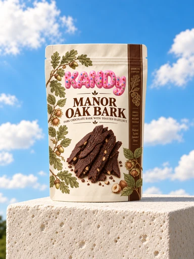
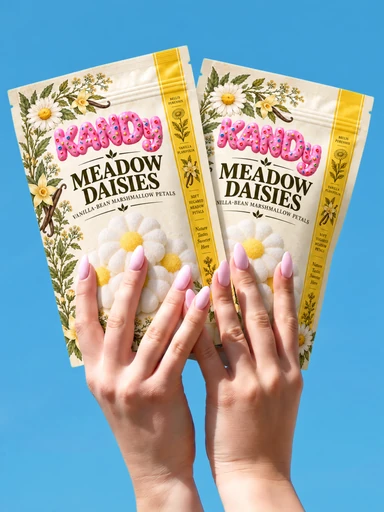
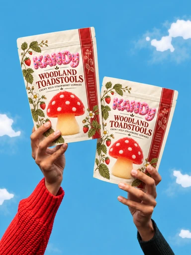
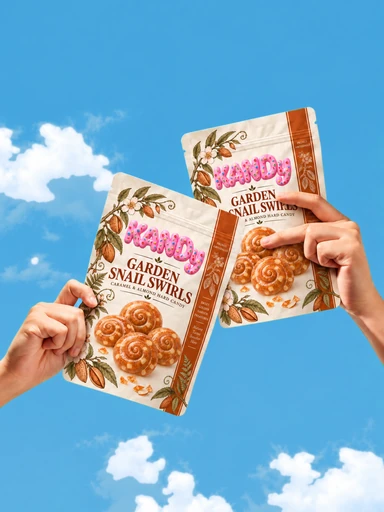
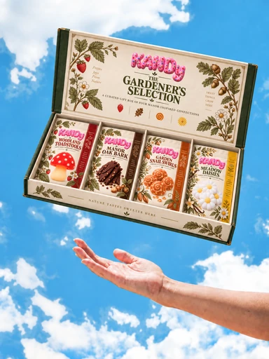
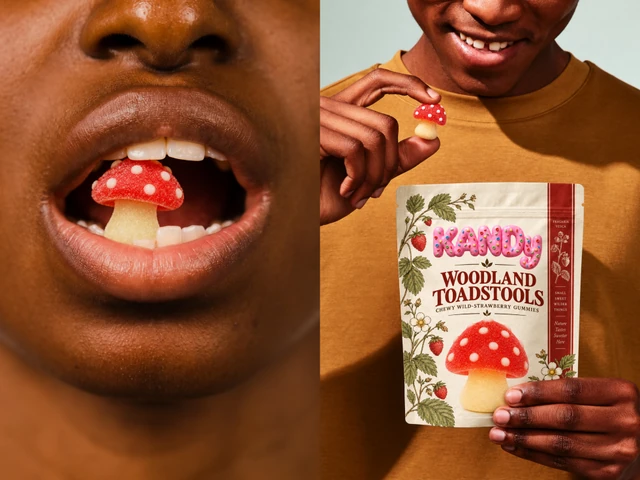

Dark chocolate + toasted hazelnut
Manor Oak Bark
$8.50 View details ↗
A gentle touch. A little wish.
A small pause. A little wonder.
Loading the KANDy garden.Confections from an English manor garden.
Candy should feel like something found in an old walled garden.
Grown slowly, beneath leaves and afternoon light.
Made from fruit, flowers, herbs, and a little imagination.
Every piece carries a trace of the garden it came from.
Somewhere, petals are still drying in the sun.
Beyond the wall, the garden keeps its secrets.

Wild strawberry, dark chocolate, caramel almond and vanilla bean — four small-batch treats, packed for the shelf you visit most.
Keep them chilled for a firmer bite, or let a pouch rest for a softer, chewier texture. Each batch is made and packed in small runs.
Pick a pouch. Pass it around.
Each one sculpted in the candy format that best holds its shape.





Explore the collection — select a confection for a closer look.
Scroll to unfold the making.
Seasons are our measure. Blossom, herb and fruit move from the manor beds to the kitchen in their own good time, carrying the character of the grounds with them.
We make little and look closely. Every batch passes through practiced hands, keeping the small distinctions that belong to something shaped with care.
The first pick is checked for colour and scent; the slow simmer follows only when the day is ready for it. Nothing is rushed to make the next batch arrive sooner.
Then each sweet is shaped, cooled and wrapped in small runs. A finished tin should still feel like the garden it came from: a little irregular, and entirely considered.
That is why the work stays close to home. We keep the quantities modest so every detail can be noticed before it leaves the manor.
Harvested by hand each week.
Fourteen petals go into a single tin, cut before the dew lifts.
Slow-cooked in small copper pots.
Forty minutes at a bare tremble — copper holds the heat evenly.
Pressed into garden trinkets.
Six moulds, all cut from originals found in the manor kitchen.
Boxed the day it's made.
Tied, weighed and posted before the kitchen closes that evening.
Signature garden shapes
Cities worldwide
Small-batch crafted
Added sugar

Made for small moments of wonder, Woodland Toadstools turn a shared sweet into a tiny piece of the manor garden. Each wild-strawberry jelly is hand-shaped, packed fresh and passed around before anyone can keep it to themselves.
Read our storyThe toadstool gummies are almost too cute to eat. Almost. I bought a tin to save for a dinner party and they were gone by Thursday.
The oak bark is the one that surprised me. Proper dark chocolate, a real snap, and the hazelnut is toasted rather than just sprinkled on.
The tin turned up with a hand-written batch card tucked under the lid. I did not expect to feel sentimental about packaging.
I kept half the gift box for myself, which I am not proud of. The snail swirls are the sleeper hit — caramel and almond, and they last.
I keep a tin on my desk at the studio. It has become a running joke that no meeting starts until it has been passed around the table.
The meadow daisies are the ones I keep going back to. Bright and floral, and not remotely sickly the way most fruit sweets are.
Tastes like a real strawberry patch and looks like a fairy tale. My daughter thinks the toadstools come from the garden down the road.
The receipt tucked into the box is a ridiculous detail and I love it. Batch number, the date it was made, hand-rolled. I keep every one.
Sent a box to my sister and she rang me from her kitchen halfway through opening it. That has never happened with a gift before.
Portfolio demo — no orders or payments are processed.